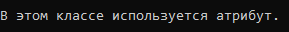

Атрибуты
В C# разрешается вводить в программу информацию декларативного характера в форме атрибута
Атрибут поддерживается классом, наследующим от класса System.Attribute.
Поэтому классы атрибутов должны быть подклассами класса Attribute.
Создание атрибута
[AttributeUsage(AttributeTargets.All)]
public class TestAttribute: Attribute
{
string _remark;
public TestAttribute(string comment)
{
_remark = comment;
}
public string Remark
{
get {
return _remark;
}
}
}
Присоединение атрибута
[TestAttribute("В этом классе используется атрибут.")]
class UseAttribute
{
}
Получение атрибутов объекта GetCustomAttributes() и GetCustomAttribute()
Type t = typeof(UseAttribute);
Type tAttr = typeof(TestAttribute);
TestAttribute testAttr = (TestAttribute) Attribute.GetCustomAttribute(t, tAttr);
Console.WriteLine(testAttr.Remark);
В результате:

Created with the Personal Edition of HelpNDoc: Write eBooks for the Kindle